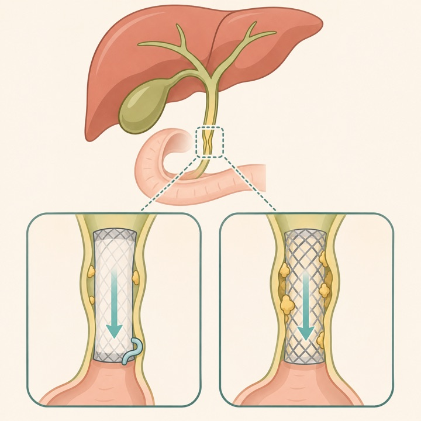
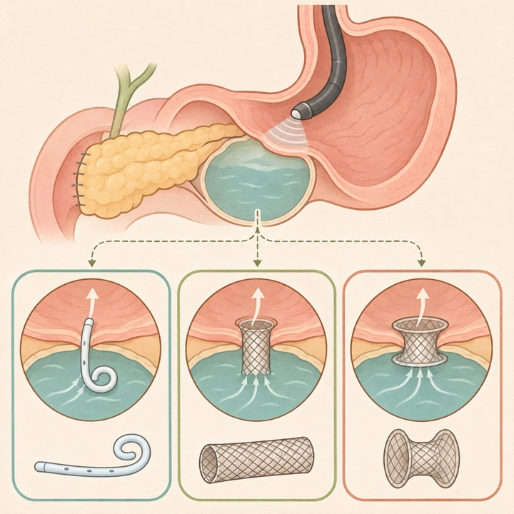
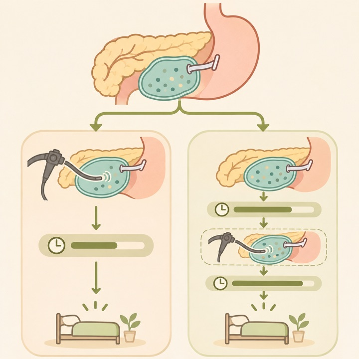
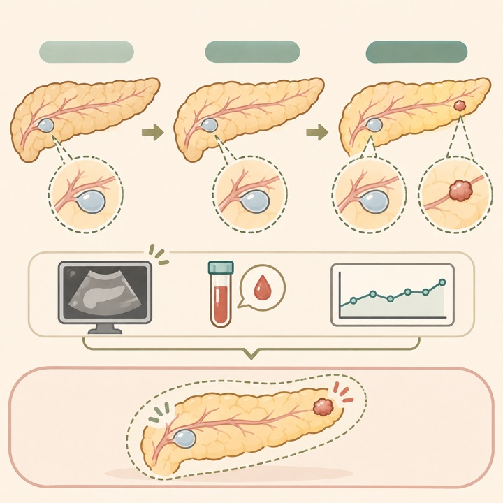
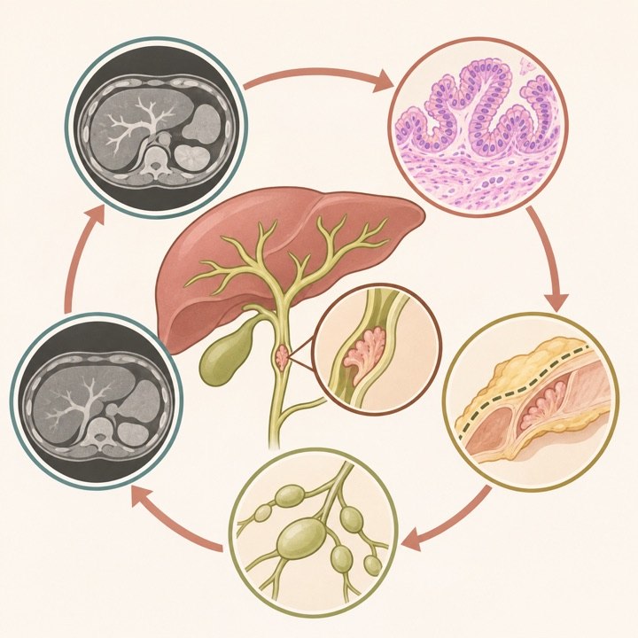
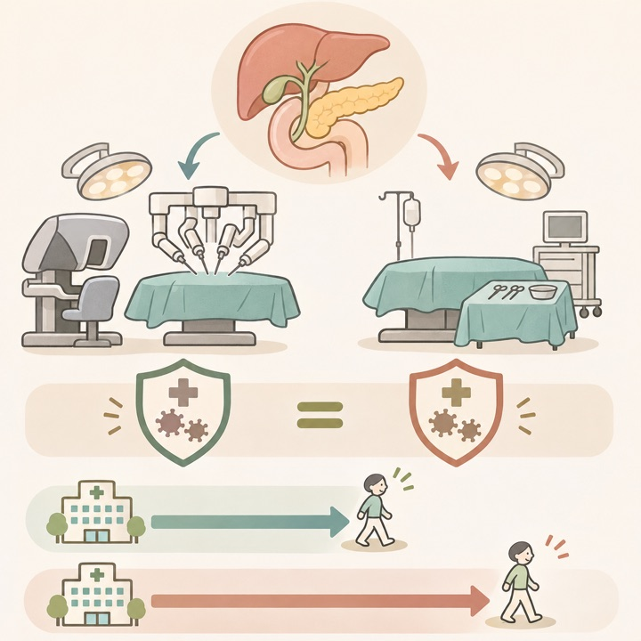
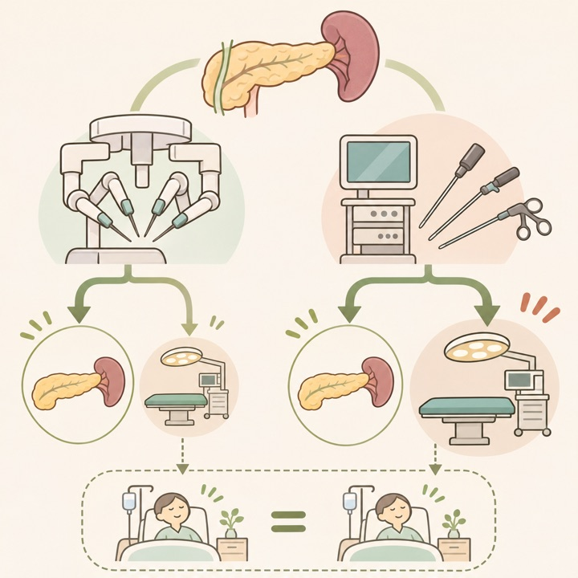
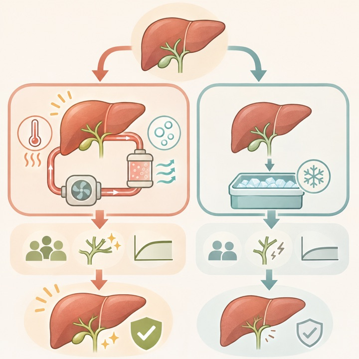

ロボット対開腹膵頭十二指腸切除：RCT個人データ統合
Lancet Gastroenterology & Hepatology / Q14 RCTs / 745
主要合併症は同等で、熟練high-volume施設では機能回復が中央値2日短縮しました。
Tokai University Pancreatobiliary Group
This Week's Pancreatobiliary Research Highlights
ChatGPTを用いたスケジュール検索で自動生成したものになります。各論文の詳細はそれぞれ原著を確認してください。
臨床的重要性、研究デザイン、診療への応用可能性を基準に4報を選定しました。IFとJCR quartileは2025年値（2026年公表、判明した最良カテゴリ）を使用し、確実に判定できない場合はQ4としています。
主要合併症は同等で、熟練high-volume施設では機能回復が中央値2日短縮しました。
併存PDACの標準化罹患比4.91。嚢胞安定性だけに基づく間隔延長へ注意を促します。
ステント機能不全27.1%対49.0%、有害事象と全生存は同等でした。
不利なドナー背景でもNRP群はgraft survival、腎代替療法、胆道再入院で良好でした。
日本語: 韓国9施設で切除不能悪性遠位胆道狭窄113例を、外部plastic stentで固定したFCSEMS（FCSEMS-EPS）とUSEMSへ1:1無作為化し、99例を最終解析しました。ステント機能不全は27.1%対49.0%（P=0.04）、競合リスクモデルのsubdistribution HRは0.44（95%CI 0.21–0.90）でした。手技関連有害事象と全生存に差はありません。脱落を含む解析集団と12か月追跡を踏まえる必要がありますが、長期胆道ドレナージの有力な比較エビデンスです。
English: External plastic-stent anchoring of a covered SEMS reduced biliary stent dysfunction versus an uncovered SEMS without increasing procedure-related adverse events; overall survival was unchanged.

日本語: 膵切除を中心とする術後液体貯留70例で、EUSドレナージにplastic stent 20例、SEMS 30例、LAMS 20例を使用しました。全体の臨床成功は87.1%で、stent別は80%、90%、90%（P=0.66）。有害事象11.4%、再発、早期ドレナージ、手術種類にも有意差はありませんでした。小規模・後ろ向きで年代差と選択バイアスを残すため同等性は証明せず、現時点では解剖と手技経験に応じた個別選択を支持します。
English: EUS-guided drainage achieved high clinical success across plastic stents, SEMS, and LAMS, but the small retrospective comparison cannot establish equivalence and supports individualized device selection.

日本語: RCT 5試験269例を統合し、即時ネクロセクトミーはstep-up法より臨床成功がわずかに高く（RR 1.08、95%CI 1.01–1.17）、在院日数が短い結果でした。死亡、手技・疾患関連有害事象、経皮ドレナージ、手術移行、再介入に有意差はありません。臨床成功の確実性は中等度ですが、その他は低〜非常に低く、試験間の手技差と少数例からルーチン即時介入を結論づけるには不十分です。
English: Immediate necrosectomy modestly improved clinical success and shortened hospital stay, while mortality and major downstream interventions were not different; most outcomes remain low-certainty.

日本語: 日本膵臓学会の前向き多施設registryで、初診時にWF/HRSを欠くBD-IPMN 1,234例を6か月ごと、最長5.17年追跡しました。高度膵腫瘍は26例（IPMN-HGD/浸潤癌10、併存PDAC 16）、累積罹患2.48%。一般人口比SIRは全体8.01、併存PDAC 4.91でした。CA19-9上昇と糖尿病新規発症・悪化が併存PDACを予測し、間隔延長適格19例中13例は模擬上の検出が遅れました。嚢胞だけでなく膵全体を監視する根拠です。
English: Even low-risk BD-IPMN carried excess risk of a separate PDAC. CA19-9 elevation and new or worsening diabetes were warning signals, cautioning against surveillance intervals based only on cyst stability.

日本語: 国際多職種panelが文献を批判的吟味し、2-round Delphiと2025年A-PHPBA Bangkok会議の意見を統合しました。非転移性IPNBは原則としてリンパ節郭清を伴うoncologic resection候補とし、多発性の術前・術中評価、個別化synoptic病理報告、浸潤例の胆管癌準拠補助療法、main-duct IPMNに準じた追跡を提案しました。選択例の肝移植も考慮します。初の国際的標準化ですが、希少疾患ゆえ多くは低水準観察データとexpert consensusに依存します。
English: The Bangkok consensus provides the first international framework spanning diagnosis, multifocality assessment, oncologic resection, pathology reporting, adjuvant therapy, transplant consideration, and follow-up for IPNB.

日本語: 7か国25の熟練high-volume施設によるRCT 4試験、745例の個人患者データを統合しました。Clavien–Dindo grade 3以上はロボット34%対開腹32%（調整risk difference −2%、P=0.37）で差がなく、修正機能回復期間は中央値9日対12日、調整差−2日でした。年齢、肥満、fistula riskによる明確な効果修飾はありません。高度経験施設の結果であり、学習曲線・費用・一般施設への外挿は別途評価が必要です。
English: Across four randomized trials, robotic pancreatoduodenectomy had similar major morbidity and a two-day faster functional recovery, but the evidence comes from experienced high-volume centers.

日本語: 20か国75施設の前向き維持registryを後ろ向き解析し、低侵襲左膵切除2,782例中272例（9.8%）が開腹移行しました。移行率はロボット6.0%対腹腔鏡12.4%。傾向スコアmatching後、移行後major morbidityは28%対33%で差がなく、ロボットは緊急移行の低下と独立して関連しました（OR 0.29）。機器選択と施設経験の残余交絡を伴う観察研究ですが、緊急移行回避の重要性を示します。
English: Robotic left pancreatectomy was associated with fewer conversions, especially emergency conversions. Once conversion occurred, morbidity was similar and appeared driven by conversion urgency rather than platform.

日本語: UK Transplant Registry 2011〜2023年で、標準DCD肝移植1,629例とdonor NRP 263例を比較しました。NRP群は高齢・高BMI、温・冷虚血時間延長にもかかわらず、death-censored graft survival 96.0%対89.0%、uncensored 93.0%対86.7%。術後腎代替療法11%対19%、1年胆道再入院6%対12%でした。NRPはDCD肝利用を約2倍にしました。時代効果と選択を伴うregistry比較ですが、NRP下で従来の虚血時間閾値を再検討する根拠です。
English: NRP expanded DCD liver use despite less favorable donors and longer ischemic times, while graft survival, renal-support needs, and biliary readmissions were better than with standard DCD recovery.

2026年11月16日〜22日に初回公開または重要更新された登録から、胆膵疾患・胆膵内視鏡・肝移植に直接関連するものを選びました。ClinicalTrials.govへの登録は有効性や安全性の証明ではありません。JRCTは検索していません。
| 新規｜急性胆管炎 | NCT07942545 / DATES-AC ERCP後の短期対標準抗菌薬期間 2026-11-17公開 / 多施設非劣性RCT / 330例 / Not yet recruiting。 |
|---|---|
| 新規｜PSC | NCT07939841 N-acetylcysteine 2026-11-16公開 / Phase II / 15例 / Not yet recruiting。 |
| 新規｜PSC肝移植後 | NCT07945873 経口vancomycin 2026-11-18公開 / Phase I / 21例 / Not yet recruiting。 |
| 新規｜ERCP放射線 | NCT07946445 患者線量と診断参考レベル 2026-11-18公開 / 150例 / Not yet recruiting。 |
| 新規｜胆管挿管 | NCT07944300 MRCP解剖によるrendezvous困難挿管予測 2026-11-18公開 / 190例 / Not yet recruiting。 |
| 新規｜EUS-FNB | NCT07948993 膵腫瘤のVOSE対MOSE 2026-11-19公開 / 472例 / Enrolling by invitation。 |
| 新規｜IPMN | NCT07944924 EUS悪性予測因子 2026-11-18公開 / 198例 / Completed。 |
| 新規｜膵嚢胞 | NCT07949578 高リスク群DNA methylation検査 2026-11-19公開 / 176例 / Not yet recruiting。 |
| 新規｜膵手術栄養 | NCT07940309 PAN-OCEAT prospective nutrition study 2026-11-16公開 / 300例 / Recruiting。 |
| 新規｜膵頭十二指腸切除 | NCT07939152 術後piperacillin/tazobactam期間RCT 2026-11-16公開 / Phase IV / 200例 / Recruiting。 |
| 新規｜mesopancreas | NCT07946380 PDAC膵頭十二指腸切除のmesopancreas excision 2026-11-18公開 / 110例 / Not yet recruiting。 |
| 新規｜切除後PDAC | NCT07946393 術前CA19-9と再発様式・時期 2026-11-18公開 / 180例 / Not yet recruiting。 |
| 新規｜局所進行PDAC | NCT07938658 QL1706＋GnP＋SBRT 2026-11-16公開 / Phase II / 37例 / Active, not recruiting。 |
| 新規｜境界切除可能PDAC | NCT07945782 SBRT＋gemcitabine＋iparomlimab/toripalimab 2026-11-18公開 / Phase I/II / 30例 / Not yet recruiting。 |
| 新規｜膵癌細胞療法 | NCT07948070 GKPTZ-01 tumor-reactive T cells 2026-11-19公開 / Phase I/II / 40例 / Recruiting。 |
| 新規｜胆道癌HRD | NCT07938645 PARP阻害 2026-11-16公開 / Phase II / 40例 / Not yet recruiting。 |
| 新規｜IDH2 iCCA | NCT07938073 vorasidenib 2026-11-16公開 / Phase II / 26例 / Not yet recruiting。 |
| 新規｜肝移植 | NCT07946146 周術期多臓器転帰・機能回復prospective cohort 2026-11-18公開 / 450例 / Recruiting。 |
| 新規｜肝切除胆汁漏 | NCT07947693 早期予測因子 2026-11-19公開 / 100例 / Not yet recruiting。 |
| 更新｜ERCP鎮静 | NCT07702240 esketamine対sufentanil 2026-11-18更新 / Phase IV / 580例 / Not yet recruiting。 |
| 更新｜急性胆石性膵炎 | NCT07238296 手術不適格例の予防的sphincterotomy 2026-11-19更新 / 92例 / Enrolling by invitation。 |
| 更新｜慢性膵炎 | NCT06267365 内視鏡治療反応予測biomarker 2026-11-17更新 / 25例 / Active, not recruiting。 |
| 更新｜慢性膵炎栄養 | NCT07559448 palatable elemental diet 2026-11-19更新 / Withdrawn（登録0例）。 |
| 更新｜遠位膵切除 | NCT06881602 robotic distal pancreatectomy後remote monitoring 2026-11-16更新 / Terminated（2例）。 |
| 更新｜切除可能PDAC | NCT04246203 ctDNA予後研究 2026-11-18更新 / 112例 / Terminated。 |
| 更新｜膵癌早期診断 | NCT07030348 十二指腸液biomarker 2026-11-18更新 / 263例 / Recruiting。 |
| 更新｜胆道癌Phase III | NCT06282575 zanidatamab＋標準治療対標準治療 2026-11-19更新 / 286例 / Recruiting。 |
| 更新｜高risk CCA | NCT06903273 術前tislelizumab＋gemcitabine/cisplatin＋S-1 2026-11-17更新 / Phase II / 35例 / Not yet recruiting。 |
| 更新｜進行胆道癌 | NCT07829874 cryoablation＋QL1706＋lenvatinib 2026-11-17更新 / Phase II / 180例 / Recruiting。 |
| 更新｜PSC pruritus | NCT04663308 volixibat 2026-11-19更新 / Phase II / 182例 / Active, not recruiting。 |
| 更新｜machine-perfused LT | NCT07585890 European outcome benchmark registry 2026-11-16更新 / 10,000例 / Recruiting。 |
| 更新｜肝移植血小板 | NCT07600905 avatrombopag対標準治療 2026-11-20更新 / 245例 / Completed。 |
| 更新｜肝移植monitoring | NCT05457114 肺動脈カテーテルと転帰 2026-11-16更新 / 1,970例 / Completed。 |
| 更新｜肝移植輸液 | NCT05386953 術中生食投与とAKI 2026-11-16更新 / 1,440例 / Completed。 |
PubMedの2026年11月16日〜11月22日EDAT/新着索引に加え、Nature Reviews Gastroenterology & Hepatology、The Lancet Gastroenterology & Hepatology、Gastroenterology、Gut、Clinical Gastroenterology and Hepatology、Annals of Surgery、Journal of Hepato-Biliary-Pancreatic Sciences、Gastrointestinal Endoscopy、Endoscopy、Surgical Endoscopy、Endoscopy International Open、VideoGIE、Clinical Endoscopy、Digestive Endoscopy、DEN Open、iGIEの公式最新掲載・アーカイブページと、選定論文の出版社ページまたはDOI/PubMedを確認しました。アクセス制限のあるページは公式DOIとPubMed索引を突合しています。IFは2025 Journal Impact Factorを優先し、quartileを確実に確認できない誌は依頼方針に従いQ4と表示しています。速報・ahead of printの情報は更新されることがあります。
2026年11月9日〜11月15日版
2026年11月2日〜11月8日版
2026年10月26日〜11月1日版
2026年10月19日〜10月25日版
2026年10月12日〜10月18日版
2026年10月5日〜10月11日版
2026年9月28日〜10月4日版
2026年9月21日〜9月27日版
2026年9月14日〜9月20日版
2026年9月9日〜9月15日版
2026年8月31日〜9月6日版
2026年8月24日〜8月30日版
2026年8月17日〜8月23日版
2026年8月10日〜8月16日版
2026年8月3日〜8月9日版
2026年7月27日〜8月2日版
2026年7月20日〜7月26日版
2026年7月13日〜7月19日版
2026年7月6日〜7月12日版
医療従事者向け情報： 本ページは医師・医学生・研究者向けの文献整理であり、患者向け広告、診療ガイドライン、個別の診断・治療助言ではありません。掲載内容は公開時点の情報に基づき、原著論文・最新ガイドライン・各施設の方針をご確認ください。